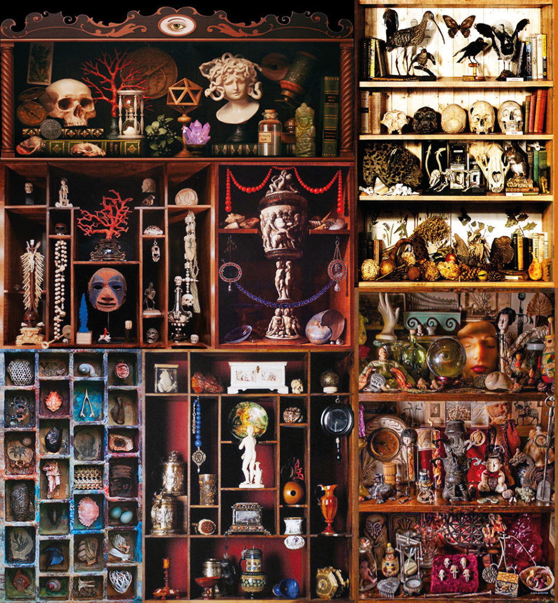
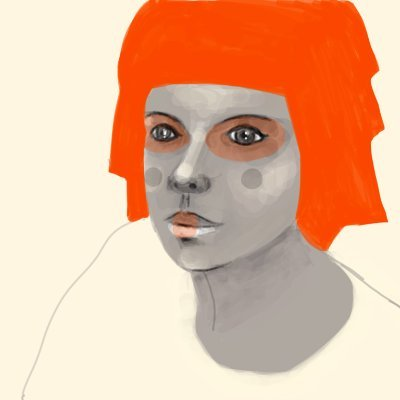

sovrn.art · Curated collection
by Isa Kost
Released 14 January 2025 · 108 objects · Ethereum
We carve out an on-chain Cabinet of Wonders to give eternal life to the dead presences that Isa Kost has carried through the years. Isa’s practice is defined by a deep connection with death, a self-archeology where finding speaks to what is lost. With WUNDERKAMMER, she presents a vision of what on-chain art can mean, making the concept of permanence speak.
The journey became clear to me when, drawing the ficus leaf, the memory of my father caring for a ficus plant in our house when I was a child arose. So did the sun spider, found through my childhood desire to visit the pyramids in Egypt. And the scent of the gardenia, which enveloped me for days in my room in Mexico, collected in a small bouquet given to me by a dear friend.
Every object in this Wunderkammer is a dead memory, a dead experience that has called out to be found, and she grants them each eternity with a place on-chain. This approach to preservation-as-a-practice threads the medium of on-chain art through the history of humanity’s relationship to rare objects, scientific inquiry, and the unknown.
All 108 objects hold a place on one body. Choose any name to find it, or let the cabinet walk itself.

Building a Wunderkammer, a Cabinet of Curiosities, is a practice that began in the 16th century as a way to honor objects of strange value. Now, we place such objects on blockchain.
Shareable GIF renders of the collection.
Perché voler portare una cosa con sé, quando la si può portare dentro di sé? La valigia dell’inconscio è molto più leggera e imprevedibile. Però essa non si può aprire con la volontà, ma sono i sogni e i desideri a decidere quando estrarne un oggetto, un’immagine, un’impressione. Ciò che si trova in quella valigia non è sempre immediatamente visibile, perciò questi disegni e queste parole. Entrambi tentativi di traduzione, reliquie viventi di impressioni e presenze non necessariamente reali. Che appartengono sia al mondo sia all’extra-mondo.Chiara Zocchi
Why would you want to carry something with you, when you can carry it within yourself? The suitcase of the unconscious is much lighter and unpredictable. It cannot be opened by will, however, but it is dreams and desires that decide when to extract an object, an image, an impression, from it. What is in that suitcase is not always immediately visible, hence these drawings and words. Both attempts at translation, living relics of impressions and presences, that are not necessarily real. That belong to both the World and the extra-World.Chiara Zocchi · translated by Isa Kost

Isa Kost is an Italian artist. She studied art and graduated in Architecture.
She approached blockchain in 2018 through the social network Steemit where she started to meet cryptoart artists and where she discovered the platform of communication through drawing, Dada.art.
From 2019 to 2023, she collaborated on a variety of projects with Dada and the art collective connected to it by making collective works and contributing in festivals and exhibitions.
Since 2019 she has simultaneously embarked on this personal artistic journey in blockchain with various projects presented in different platforms including Makersplace, Known Origin, Foundation and Zeroone.
She is dedicated to exploring the contemporary visible and invisible natural world.
In her works she experiments with both analog techniques such as printmaking, collage and embroidery and digital techniques, sometimes mixing them together.
Her approach is to embark on a journey and to see herself as an explorer, similar to someone who sets out to discover new lands or new species of plants and animals.
Isa Kost, Wunderkammer, 2025. © Isa Kost. Sacred Foot is held in the permanent collection of the Francisco Carolinum, Linz. Words by Chiara Zocchi, translated by Isa Kost.